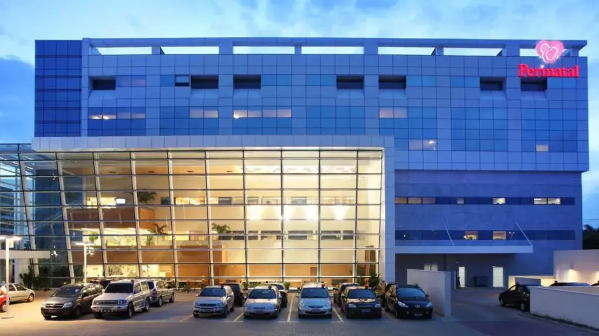

Блог
Материалы о Бразилии
Практические статьи о документах, финансах и переезде.
Недвижимость · Личный опыт
Покупка квартиры в строящемся доме в Бразилии: этапы и расходы
Читать статью →
Налоги и финансовая прозрачность
Что видит налоговая Бразилии: счета, PIX и e-Financeira
Читать статью →


Следующий шаг
Нужна помощь в Бразилии?
Помогаем с недвижимостью, налогами, открытием бизнеса и легализацией. Расскажите о вашей задаче — обсудим возможные решения.
Отправить запрос →